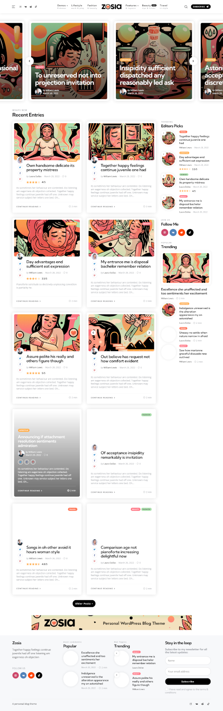
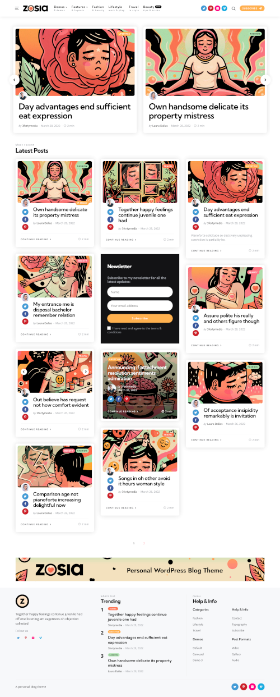
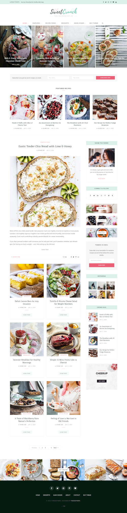
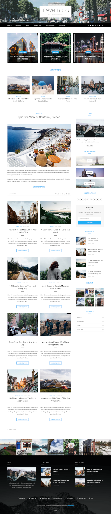
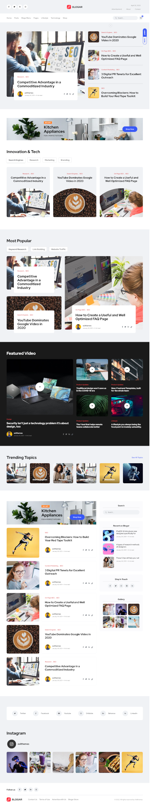

Blog website:

Zosia Demo 1
Zosia Blog theme in wordpress
Zosia is an eye-catching WordPress theme for personal
bloggers. With enough theme options to give you plenty of
control without being overwhelming, 25+ beautiful blog
layouts, 10 single post layouts and optional plugins
available to give your theme an extra boost. Zosia is
light, fast and a breeze to use. Oh, and it looks amazing
too. A classic blog theme with plenty of flair.
/wordpress/zosia-01

Zosia Demo 2
Zosia Blog theme in wordpress
Zosia is an eye-catching WordPress theme for personal
bloggers. With enough theme options to give you plenty of
control without being overwhelming, 25+ beautiful blog
layouts, 10 single post layouts and optional plugins
available to give your theme an extra boost. Zosia is
light, fast and a breeze to use. Oh, and it looks amazing
too. A classic blog theme with plenty of flair.
/wordpress/zosia-02

Sweet Cruuch Food
Sweet Cruuch resturant theme in wordpress
CheerUp is a theme with luxury design options, tailored to
be exceptional on all kinds of blogs and minimal
magazines. Not only the built-in modern design choices are
aesthetically pleasing, it’s packed with over 1000+
possible layout combinations suitable for blogs and
elegant magazines.
/wordpress/sweetCruuch

Sphere Blog
Sphere Blog theme in wordpress
CheerUp is a theme with luxury design options, tailored to
be exceptional on all kinds of blogs and minimal
magazines. Not only the built-in modern design choices are
aesthetically pleasing, it’s packed with over 1000+
possible layout combinations suitable for blogs and
elegant magazines.
/wordpress/sphereBlog

Tech Blog
Tech Blog theme in wordpress
It is a perfect fit for Blog, Creative Blog, Tech Blog,
Lifestyle Blog, Magazine, SEO Blog, News Agencies, Travel
& Tour Agencies, Business Magazines, Lifestyle Brands, and
Technology News websites. It is also suitable for
publishing or reviewing websites requiring a sleek,
modern, and clean look.
/wordpress/techBlog

Creative Blog
Creative Blog theme in wordpress
It is a perfect fit for Blog, Creative Blog, Tech Blog,
Lifestyle Blog, Magazine, SEO Blog, News Agencies, Travel
& Tour Agencies, Business Magazines, Lifestyle Brands, and
Technology News websites. It is also suitable for
publishing or reviewing websites requiring a sleek,
modern, and clean look.
/wordpress/creativeBlog